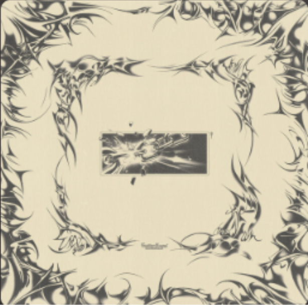
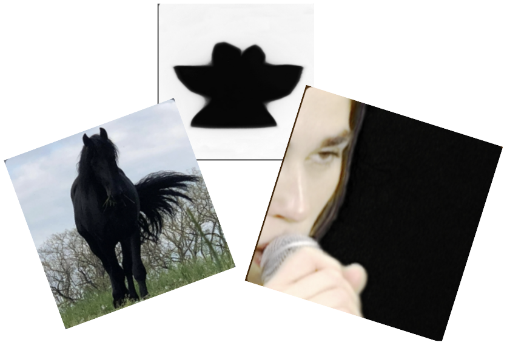
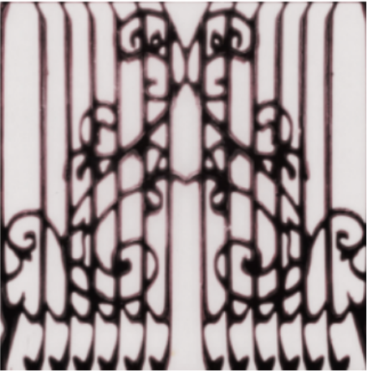

themes: alone time, closing before opening, red, texting, diary entries, one single tear, emo broadly
- State of Grace - Camden
- Burial - Phoneglow
- Acid Rain - Model/Actriz
- sunnbrella - nothing forever
- Sneaker Pimps - Low Place Like Home
- Ribbon Skirt - 41
- Local H - Bound To the Floor
- Luke Slater - Love
- Ali Omar - Hashish
- Fine - I Could
- Baxter Dury - I'm Not Your Dog
- My Life With The Thrill Kill Kult - A Daisy Chain 4 Satan
themes: alone time, closing before opening, red, texting, diary entries, one single tear, emo broadly
- Sina XX, Antigone - Badawi
- i-F - Space Invaders Are Smoking Grass
- Opus II- Evolution Rush
- Lust For Youth, Croatian Amor, Emma Arcs - Passerine
- JEWELSSEA- If You Don't Drop dis... Wyd?!
- Sextile, Izzy Glaudini - Kids
- Knifehandchop - Dancemix2000
- CFCF - Cell Site in Somerset
- Horse Vision - Animal
- 1Tbsp, Meth Math - Wet Peak Stars
- Eraser - Dinner Roll
- Fib - PS
- Bibi Club - Le feu
- Dolly Creamer - Run Ragged
- shower curtain - You're Like Me (retail drugs remix)
sunnbrella - gutter angel
London-based musician and producer sunnbrella melds shoegaze with hyper-pop in this energetic and glittering new LP via Music Website (Vitesse X, Tapeworms). Electronically driven, withpulsing club beats and glitchy breaks, gutter angel overrides the pop narrative with earnest lyrics and composition based on the soft melodic riffs of shoegaze. The sonic world of sunnbrella feels cinematic, melody-heavy, and maintains an ambience of adolescence without sounding childish. Behind sunnbrella is David Zbirka, who pulls inspiration for his work from his fathers expansive record collection that exposed him to emo, hardcore and shoegaze. He draws on this inspiration and finds a place for these sounds in the electronic music renaissance, with sunnbrella garnering millions of streams and touring with Beach Fossils and Winter. This exciting new release is upbeat and emotional, evocative and pop-driven, chaotic and contained.
Escho - Record Label (Copenhagen)
Generally, I feel like everyone should be keeping an eye on Danish label Escho, who is releasing some superb music as of late. Cohesive aesthetics and ultimate "cool" factors need not deter. I think there is something universally intriguing about the music coming from this label. We are seeing danish duo Smerz make waves in the algorithmic sea, with even casual listeners being lured by the siren call "Put your hands around my body / hold me tight and show it to me." Love songs are coming back in a big way, mark my words. I included most recent single from danish musician Fine in this episode, a sexy flirty track that adds to the escho roster.
Model / Actriz - Pirouette
Its been a minute since something has completely disarmed me, leaving me raw and emotionally battered. The shift from irony to sincerity has been in the cultural lexicon for quite some time, but I think we are seeing it play out in ways that might stick. Pirouette by Model/Actriz feels like a little revolution in this, like the cool guys at the party deciding to do an open mic reading of their diaries. And I love it. So much. "I've recognized the beauty in fragility, its true/ But I feel like a stranger to it now suddenly" In another world bands like Model/Actriz would be encouraged to continue down a cursed path of ultimate aloofness, maintenance of the cool factor by disassociation from the self. We see this every day with artists, and the ways in which universal platitudes get more streams than the soul-cutting depths of bearing ones soul. Pirouette is an aggressive reminder that the girls want you to be sincere. Moving forward, maybe we will be demanding it.
You really should sign up for the email list
you really should i think